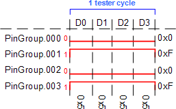
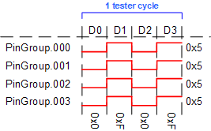

Pin groups
Using pin groups in the device access file can simplify the :apgAccess: definitions. In the following examples the pin group named PinGroup contains four pins (PinGroup.000 through PinGroup.003). The examples illustrate how different values in the :data: column of an APG access are applied to the different pins of the group.
Note If a pin group is used in the :pin: column of an
:apgAccess:, all pins must be addressed with a value that has at least as
many bits as there are pins in the group.
Example
Examples for :data: expressions and their effects (assuming a pin group with four pins):
0xf:All pins of the pin group are set to 1.0x1:Only the least significant pin (PinGroup.003) is set to 1, all others are set to 0.0x8:Only the most significant pin (PinGroup.000) is set to 1.0x0:All pins are set to 0.
Using pin groups:
{ :pin: :states: :data: }
{ PinGroup { 0 1 } 0x5 }
{ ~ { 0 1 } 0x5 }
{ ~ { 0 1 } 0x5 }
{ ~ { 0 1 } 0x5 }
Another example:
{ :pin: :states: :data: }
{ PinGroup { 0 1 } 0x0 }
{ ~ { 0 1 } 0xF }
{ ~ { 0 1 } 0x0 }
{ ~ { 0 1 } 0xF }
Functional changes
- Introduced before SmarTest 6.3.2